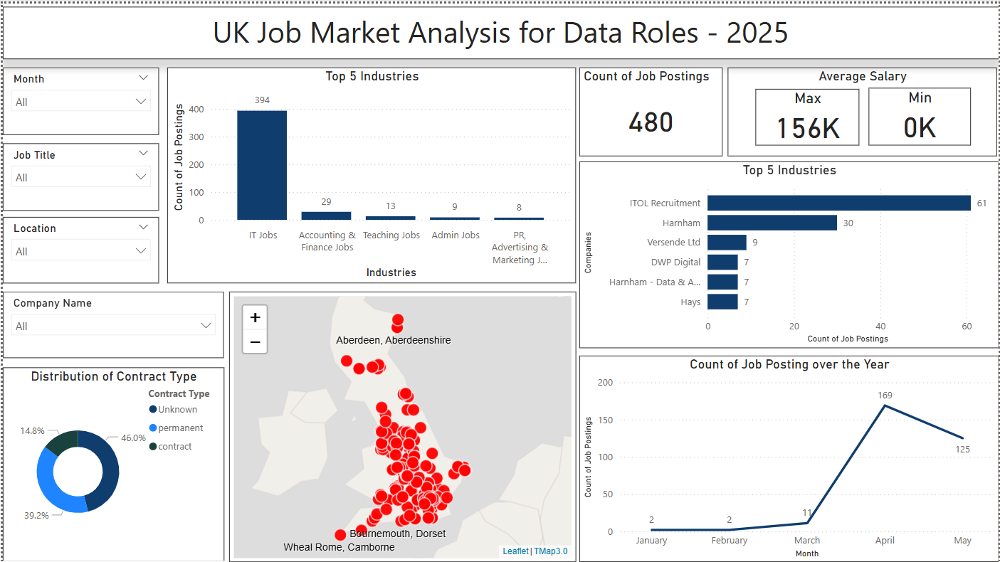

UK Data Analyst Job Market Analysis
Tools Used: API, Python, Pandas, Power BI
Aspiring data professionals in the UK often struggle to identify current job trends, industry demands, and competitive salary ranges. This dashboard was built to analyze live job postings using API data, helping candidates and recruiters understand key hiring trends across locations, industries, and contract types.
